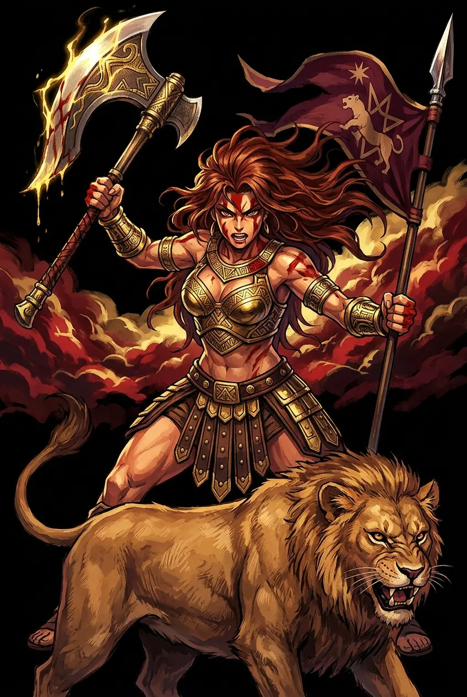
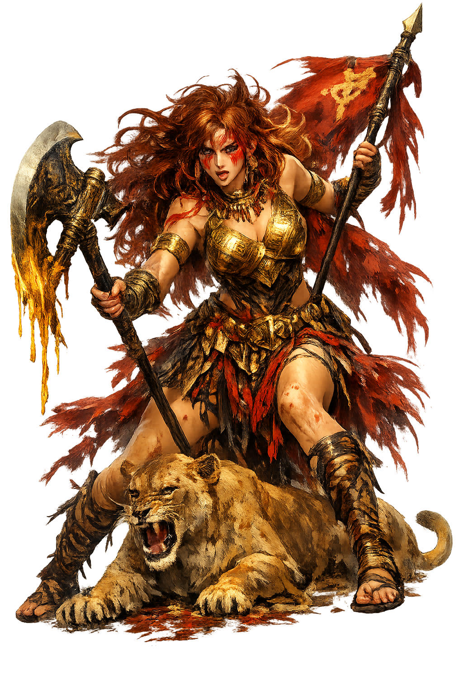

The Authentic Orthography
Goddess of War and the Hunt · The Virgin of the Hunt and War

Unicode restoration and ASCII comparison
𐎓𐎐𐎚
The name in its original Canaanite form. ꜥAnat (𐎓𐎐𐎚) is attested in the source tradition — “Canaanite warrior goddess, sister and ally of Baꜥal”. Its Egyptological ain and alef letters carry the full phonetic and orthographic weight of the source tradition.
anat
Reduced to plain anat, the name loses everything that made it specific: Egyptological ain and alef letters. What remains is an ASCII string that machines can parse but that no longer speaks with its original voice.
ꜥAnat
The Unicode restoration recovers what ASCII flattened. ꜥAnat restores Egyptological ain and alef letters, returning the name to its original written dignity. The domain encodes to Punycode, but the browser displays the truth.
ꜥAnat.com → xn--anat-pe8o.com
The non-ASCII characters in ꜥAnat are encoded while the ASCII remains visible. To the DNS, it is Punycode. To humanity, it is ꜥAnat.
How ꜥAnat travels from ancient script to the modern URL
Ugaritic ꜥnṯ, cognate with Hebrew ʿĂnāt; a warrior-goddess whose name is probably related to a Semitic root for vigour or strife.
Goddess of War and the Hunt
The Unicode restoration ꜥAnat uses registrable Latin diacritics; the Ugaritic form is not registrable in .com.
How ꜥAnat was spoken
War, Hunt, and Ferocious Loyalty
ꜥAnat is the maiden who refuses to grow up into the domestic sphere. In the Ugaritic texts she is neither wife nor mother but a singular force: a warrior who wades knee-deep in the blood of her enemies, a huntress who ranges the wilderness, and the most faithful ally of Baꜥal. Her title btlt — "maiden" — marks her as marriageable in social terms, yet mythologically she remains unattached, unpredictable, and absolutely devoted to her brother.
She fights both armies and cosmic foes, wielding bow, spear, and sword; KTU 1.3 ii describes her battle fury in graphic detail.
She ranges mountains and heights in search of game or vengeance; her pursuit of Aqhat turns the hunt into tragic myth.
Baꜥal's most passionate advocate; she confronts El, avenges Baꜥal's death, and restores the storm to the world.
A young woman operating in male-coded spheres without condemnation — a figure of autonomous, even terrifying, agency.
Stories of ꜥAnat
ꜥAnat's mythology is preserved chiefly in the Ugaritic Baꜥal Cycle and the Epic of Aqhat. She is not a fertility goddess in the usual sense; she is force itself, concentrated in a young woman's body, and her stories turn on violence, loyalty, and the refusal to accept limits.
In KTU 1.3 ii, ꜥAnat returns from battle in exultation: 'Heads rolled beneath her like balls, hands flew over her like locusts.' She fastens severed heads to her back and hands to her belt, then washes herself clean in the dew sent by Baꜥal, the Rider on the Clouds. The scene is shocking not because she is evil but because she is unrestrained — war as ecstasy, not duty.
When Mot, Death, swallows Baꜥal and the rains fail, ꜥAnat searches the wilderness for her brother. Finding Mot, she attacks him with a sword, winnows him like grain, burns him, grinds him, and scatters him in a field (KTU 1.6 ii 30–35). Her violence is the engine of Baꜥal's return and the renewal of fertility.
In KTU 1.17–19, the craftsman god Kothar-wa-Ḫasīs gives the hero Aqhat a marvelous bow. ꜥAnat covets it and offers Aqhat life without death in exchange; he refuses, telling her that womenfolk do not hunt. Enraged, she has the Sutean warrior Yatpan murder Aqhat. The bow is broken, the land withers, and Aqhat's sister Pughat eventually avenges him.
A hymn to Anat (KTU 1.13) praises her as a swift huntress and protector of the king. She is invoked as a divine patron of royalty and warfare, her energy channeled from chaotic fury into guardian power.
ꜥAnat disturbs the modern imagination because she refuses our categories. She is a young woman and a killer, a sister and an avenger, a goddess of life-giving rain and of blood-soaked battlefields. In a world that still struggles to imagine female power without apology, she stands as a difficult ancestor: not a nurturer, not a consort, but a self-possessed force.
Enter Extended Lore